What I did in my September vacation
Or how a failed attempt to develop superpowers screwed up everything.
September 9th
The night of the 9th I complained to Rebecca that I was experiencing what I described as a “fat tongue” and I felt that I was slurring some words when speaking. Rebecca denied the slurring and we wrote the whole thing off as possibly getting sick just in time to start my new on the 12th.
September 10th
The morning of the 10th began as usual with me waking up around 5am. The day started off with me checking email on my phone.
Then things went off the rails.
From this point on most of my memories are blank, constructed from what other people have told me or entirely made up. It's been long enough that I'm not sure what is what. Rebecca also tells me that my timeline is way off.
What I do remember is that Rebecca was in the bathroom and something was wrong. Like really, really wrong. The right side of my body was only partly doing what I wanted it to, and my head felt off. It's not something you can describe, only that my body wasn't really there like it usually was.
I tried to call out to Rebecca but I could not speak. I remember trying to use my right arm to make noise by banging in on the bed. My arm flopped around but I wasn't making noise (you try and make noise by banging on a mattress with an arm that isn't doing what you want and see how you go).
…
Rebecca was standing over me with her phone yelling to Liam to come and help.
…
I recall some parts of a conversation about someone coming.
…
I was in a bed being pulled out of the back of an ambulance. The sun was really bright. The paramedics were really attractive.
…
I know I was in the QE2 emergency department. There was a lot of lying in a bed and beeping things. I believe I was in a CT scanner at one point and possibly an MRI. Someone mentioned that the scans showed a lesion in my brain.
My earlier episode at home was being called a Tonic-Clonic Seizure (previously known as a Grand Mal).
Emergency departments are really boring. Though the staff had nifty gadgets around their necks that they could use to call other staff using voice recognition.
Bec: You had a second seizure about 7:30am, which the nurses stopped with an injection.
They were trying to find a neurologist who was available to take me on. Greenslopes and the Wesley were the options discussed. Eventually they found a bed at the Wesley for me.
More waiting around before another ambulance ride. This trip I was mostly conscious for as I was wheeled out to the ambulance. (PS. Queensland Ambulance Service has a policy of hiring extremely attractive people). I moved to the ambulance bed and strapped in. The motors on the bed to get them in and out of the back of the ambulance are noisy.
The trip to the Wesley Hospital was uneventful and I think I was taken straight to Ward 2M which is the neuroscience ward for people who have brains that don't work right.
Fishbowl Stay #1
I have since found out that the policy at the Wesley is that if you have a seizure you get stuck in the fishbowl. This is a 3-bed room right next the nurses' station with big glass walls so they supposedly see everything going on. It is not pleasant.
The thing you realize about the neuro ward is their main clientele is 70+ patients who have suffered a stroke. Most of the time I was there, I was the youngest patient by a good 25-30 years.
My neurosurgeon (ps. names have been redacted to protect the innocent, or more likely because I was there so long and encountered so many people, I have no idea what their actual name is) introduced himself and said things about the hole in my head. My lesion was now being called a mass, more tests were required to figure what the fuck it was. Neurosurgeon vanished.
I have learned that this is a mystical skill of doctors in hospitals. They show up unannounced at any time, they speak really rapidly, may ask a few questions (sometimes they even appear to listen to the answers), then vanish in a puff of antiseptic hand wash. Maybe they have a course on how to do this in med school?
By this time, I think I had at least 3 cannulas, most of which were being used to pump things into me. Sometimes they sucked some blood out of them.
I tried to sleep, which is surprisingly hard when you have someone wake you up every 4 hours to get your “OBs” (observations) which include strapping a blood pressure cuff to your arm, attaching a pulse oximeter to a finger, getting you to squeeze their fingers and the final insult is to shine a really, really bright torch in both eyes (I'm sure staring at the sun would be less painful).
September 11th
Things start to get hazy again from here.
A speech therapist showed up with a glass of water, told me to swallow while she fondled my throat. I assuming it was to make sure I wasn't going to choke to death on anything.
More doctors' visits. I think I was up to 2 at this point (little did I know I was starting to collecting them like Pokémon). I know had a neurosurgeon and a neurologist.
My speech was affected by the seizure and getting words out was hard. My right arm wasn't doing what I wanted it to? This may have occurred after the surgery. But otherwise I felt fine.
Rebecca was by my side constantly. She's nice that way.
More OBs, nurses are sadistic with their blinding torches. I complained to one that the service in this hotel is shit. She found it funny enough that she had to tell everyone for the next week.
September 12th
Saw in my email that the job I was supposed to start today was readvertised. Sigh.
Think I had another seizure about now. This time it was called a focal seizure. I was conscious throughout and knew what has happening. I just had no control over my right arm.
I think they controlled this one by sticking with a drug called midazolam. The benefit of having so many cannulas is you don't need more holes poked into you.
Side-effect of Midaz is knocks you out. Spent most of the rest of the day asleep.
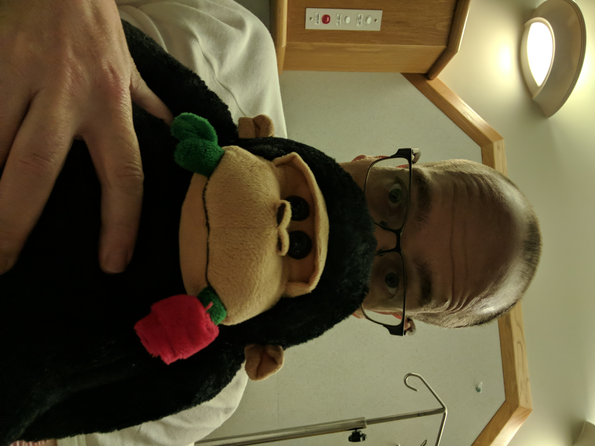
I cannot describe how depressing it is waking up alone at 3am in a hospital thinking incredibly dark thoughts about your own mortality and the number of things you haven't done and things you want to say to people. George kept me company many of these hours.
September 13th – 16th
No idea what really happened during most this time. I do remember the sadists who call themselves “nurses” and their shiny torches.
Had a visit from speech therapy people to try to improve my ability to talk. Apparently, having your brain spaz out on you can make it difficult to communicate effectively. This involved long lists of words of various complexity. I could say the easy ones, but the 3+ syllables were a struggle.
Pretty sure there were more seizures and more Midaz. More drugs to control the seizures, Midaz is the nuke when they're active in progress, other drugs were to stop them happening in the first place.
I don't know how many CT scans and MRIs I had, but I'm sure I individually financed someone's next yacht.
Somewhere in this period was a Functional MRI. This is fancy a MRI where they stuff you inside a big arse magnet and get you to say things, or think other things. The idea is to map out what parts of your brain do what so that when they decide to start the slicing and dicing they can try and avoid the bits you are actively using. My guess is there wasn't a lot to worry about.
There was talk of a PET FET Scan, but it didn't happen. This makes me sad as it involves radioactive goop specially created just for me in Melbourne and shipped up so they can inject it into me. I'm pretty sure that would have given me superpowers, but my brain decided against that option.
At some point in this time I got my own room. People came to visit me. It was really nice that they came, companionship is an excellent morale booster, even if you sound like a text-to-speech robot from the early 90s. For those of you that came I will be forever grateful.
At one point in here I got out of bed to tell the nurses that something was wrong. I remember thinking that they were awfully busy (I heard their buzzer going off an awful lot) so I thought that it was better to go find one.
Boy, did that get me in trouble.
I was halfway down the corridor when one of nurses saw me approaching. I was having another focal seizure effecting my right arm and face (having the muscles spams in your face uncontrollably is really uncomfortably and I would not recommend it). They bundled me back into bed, shot me up with more Midaz and wheeled me back to the fishbowl.
I'm told around Saturday/Sunday things went downhill fast. I have no recollection of it at all. Most of the last half of that week is a complete blank. Rebecca tells me I spent a lot time focused on myself and how things hurt a lot and having regular seizures. Apparently, I should have been more focused on how super she is.
Sometime in here I had a seizure bad enough that they called a Code Blue (no idea what that means). I vaguely remember at one point there were a crap load of people around me, so I'm assuming that was the code.
September 17th – 20th
Tuesday 17th I added to my collection of scars. This is the day the Neurosurgeon decided it was time to go in and dig out the bad things.
The image below is the MRI the day before the operation. The white circle is the abscess itself, while the grey shadow around it is the swelling of the brain it caused.
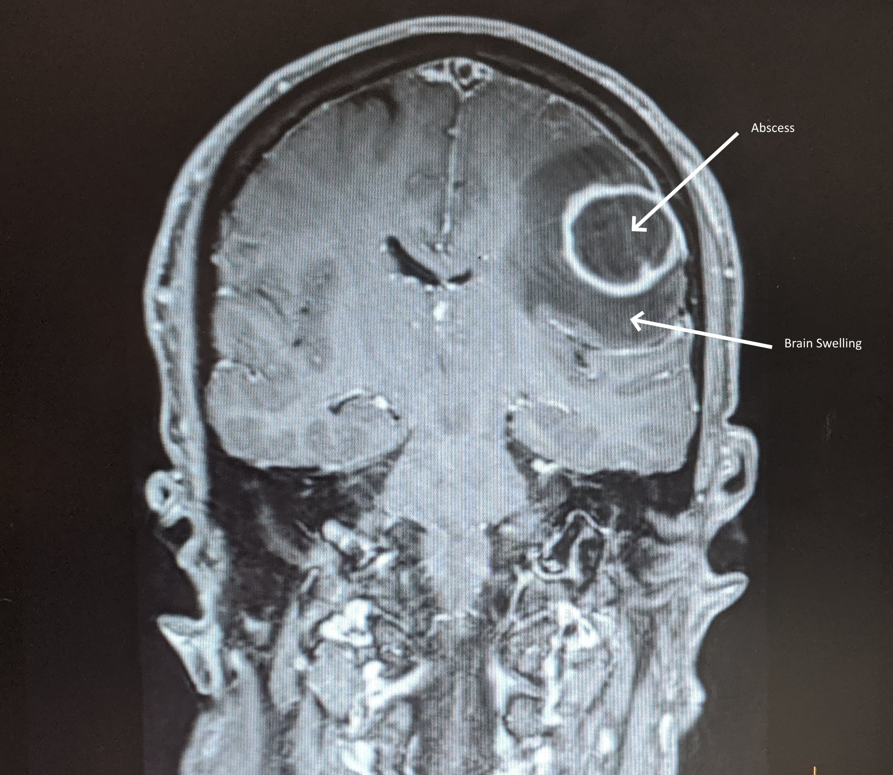
The next image is the MRI taken no the 13th October. You can see the abscess is significantly smaller, the swelling is about the same size. The swelling is whats causing all my current issues.
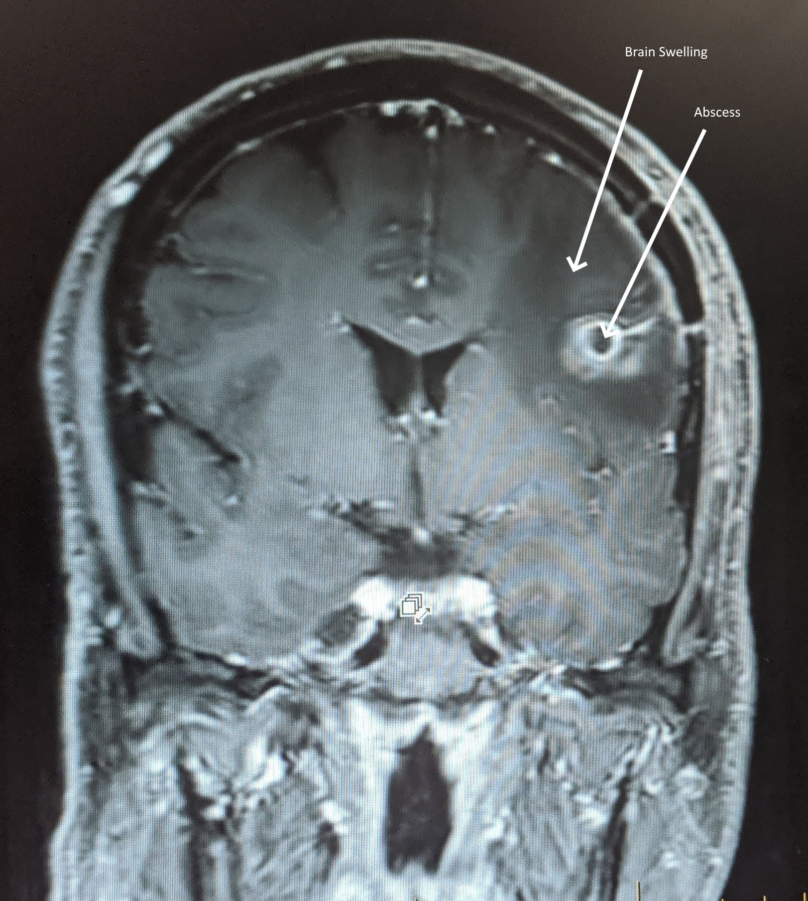
While it's not as long the one on my chest, the scar I ended up with after the surgery is by far the coolest. I now have a longish scar on the left temple in front of the ear. Chicks dig scars, right?
Though saying that, neurosurgeons suck majorly at haircuts.
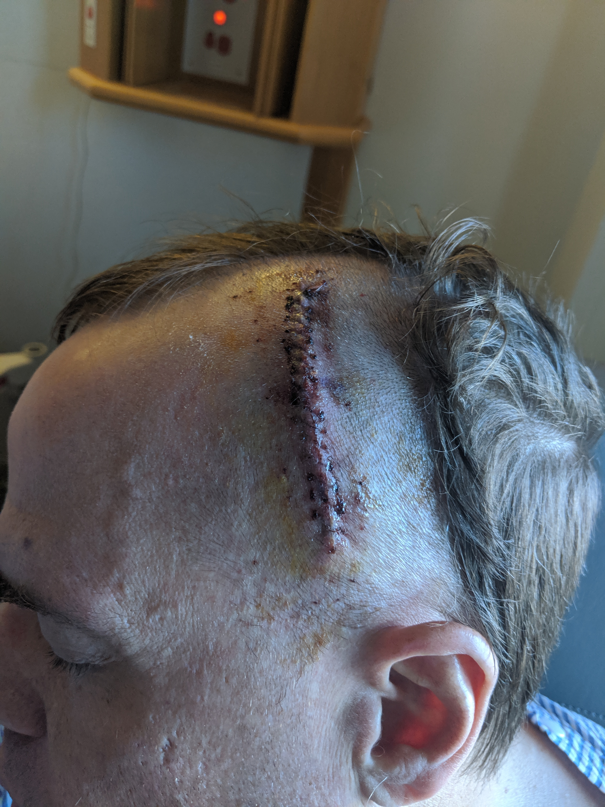
I woke up in ICU… sort of. I wasn't really “awake” for the four days I was there, but I have memories of being “awake” at the same time. There were a lot of machines and noises, but most of it was a blur. Vague memories of Rebecca and maybe mum, but not really sure if they are real.
The painkillers they fed me were the triply kind and I distinctly remember hallucinating. The thing about hallucinating and knowing you're doing it is trying to sort out what is, and is not, real. The walls were pulsating at me with weird textures. Things were kind of extruding from the roof and yet not. I knew it wasn't really happening, but it was hard to keep reality in check.
Sponge baths are also an interesting experience. Not as fun they should be that's for sure.
A few days after getting out of ICU this is the sort of control I had over my right hand. I was attempt to touch my thumb to the tip of each finger.
It was a momentous occasion when I managed to put my thumb up.
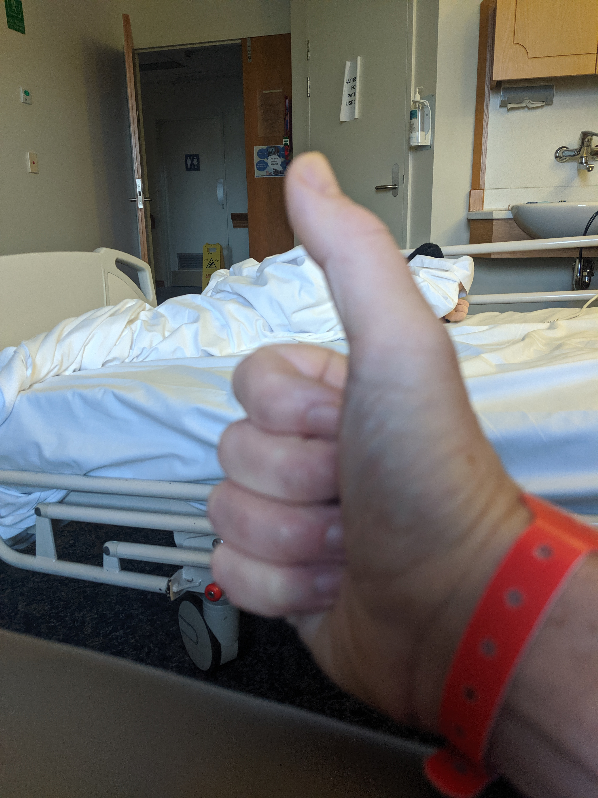
September 21th
Fishbowl Visit #?
Out of ICU I was wheeled into the fishbowl. I was now conscious enough to be told what was going on.
With the seizures getting more frequent and more severe they had decided to it was time to cut open my skull and actually poke around.
I was lucky. Very Lucky.
Up until the surgery, there was a high probability that my lesion/mass was cancer. The kind that generally kills the people that have the misfortunate to grow one.
What I had instead was a 3.1cm brain abscess. Think of your standard infected scratch filled with gunky puss and gross stuff, but inside your brain. Mmmmmm… tasty.
The reason this made me lucky is because it is something that has a specific cause and is very treatable. Unlike the alternative, cancer, where they just radiate your brain and fill you full of poison in the hopes that the cancer dies before you, or something you need, does).
They took samples of the gunk and sent it to some pathology lab so they could play with it and try to figure it what it was, and more importantly how to kill it.
The problem with all this is after someone does something silly like stick a sharp pointy thing in your brain there are consequences. In addition to the damage caused by the abscess itself, the surgery also caused some damage.
So, I was now back in the fishbowl, together with the attendant sadistic nurses and their incessant need to shine bright lights in your eyes every 4 hours. I was now permanently hooked up to an intravenous drip full of various antibiotics while they tried to kill whatever was left of my brain parasite.
A note about being hooked up to an IV drip 24 hours a day – they're fucking annoying. Every four hours they changed the bag on it to pump me full of antibiotics in an attempt to kill everything in my blood stream. This went for an hour, then the machine beeped to say it's out of drug, so the nurses had to come and change it and flush the drip, which took 12 minutes. Then it beeped to again to say it was finished, so it needed to be changed over to a slow drip of normal saline to keep the line open. Repeat every 4 hours.
And that's assuming you didn't lie down the wrong way, or roll over or the moon was in the wrong position at which the machine would beep to complain about something else.
Let's not forget that when you are mobile and dressed in normal clothing, that you can't get your shirt off. Because your arm has an extra attachment on it that ends in a big arse metal pole with an eternally beeping machine designed by a lesser demon. So, to have a shower you need to have someone help you to take off a shirt.
While I was still having seizures post op, they were a lot less severe, and less frequent. Thankfully the frequency was also declining. Any seizures I had were classed as “focal” where the parts of my body would twitch. This was predominately my right forearm, and the right side of my face. I could feel them coming on and could sometimes control them. Most often it would happen when I was thinking too hard about almost anything. You know, the hard stuff, like picking things up in your hand, trying to find the right word to say, staying awake too long, etc.
Fishbowl companions
While I was recovering from the surgery I spent a lot of time in the fishbowl (walking/talking was hard, the IV pole was annoying, and I was tired ALL the time). In this time, I had a few notable companions that I felt worth mentioning.
Angry German Nurse
This was an elderly lady with a strong Germanic accent. She was only there for one night, but if anyone had reason to talk to her they would the story about how the nurses in the hospital were horrible, and she had been a nurse for 20 years and knew exactly what they were doing wrong. It didn't matter if there were taking OBs or replacing the water jug – EVERYTINK WAS WRONG.
When it came time for discharge, she had a piece of paper with 3 numbers on it. The first was her son-in-law who owned his own business and always had his phone with him and would pick up (hint the number was not a valid phone number).
The second one was someone else who didn't answer the phone.
The third was someone who took three attempts to contact who couldn't be there for over an hour. This didn't matter to angry german nurse, she was out of there. Her bags were packed and she was on the way to the hospital reception to await pickup.
Going by her general demeanour, and how angry she got with anyone that talked to her, I got the impression that her contacts were probably dodging her calls intentionally.
Deaf Incontinent Dementia Guy
While a sad story, this guy was mostly notable for the amount of trouble he caused for the staff. In the middle of the night he took his hearing aides out, which meant everyone had to shout at him to be barely understood, he also refused to comply with any instructions about the need to pee. The dementia only added to it because he was constantly confused about why people were shouting at him about the need to pee.
This would have been sadly amusing had it not being going on for hours, in the middle of night, while I was trying to recover from someone chopping a hole in my skull.
Attempted “murder” victim
One guy I met was a nice guy in his late 60s. He had been helping his wife carry some stuff out to the trash, and while distracted by carrying too much stuff, and dodging things on the ground, he wasn't looking up. What he failed to notice was his wife (who was a lot shorter than he was) had only partly opened the garage door. She was comfortably carrying stuff out to the bin and this guy followed her out. He clonked his head on the bottom of the door, knocking himself out.
The poor guy ended up with a massive bleed in the front of his brain, and over the course of the 1 day I knew him he degraded pretty rapidly before they wheeled him off to surgery.
Post Op visits from the neurosurgeon
I had a few brief visits from the neurosurgeon who came to check out his handy work. He did good work. The scar was straight, and everything seemed to be healing well. The dissolvable stitches meant nothing had to be done and I just had to wait for the scab to heal fully. There was some concern that the abscess might fill itself up and they would have to go in a second time to drain it. So, I had periodic CT scans to see what was going on, but everything seemed to going well. The only thing remaining was to kill the parasites and wait for the inflammation from the surgery and abscess to go away. This, I am told, will take “months”.
He was apparently satisfied that his job was done and I rarely saw him after that.
Private room again
After they found the abscess, I ended up with a new doctor to add to my roster. Apparently when you have a brain parasite, you need a specialist to deal with it. This guy is a specialist in infection diseases, and was in charge of figuring out what to do about it all.
Thankfully, this guy read the riot act to the nurses and told them I need rest and recuperation that wasn't possible in the fishbowl, so ended my stay in the fishbowl. His reasoning being any seizures I had post-op were focal and I was fully conscious throughout and capable of calling for help.
The pathology people took a few days to culture the samples they pulled out of my brain and found that it was actually two bugs, and fairly common ones. One that generally lives in your sinuses, and the other in your mouth. Once they identified them, they went to working trying to figure out the best way to kill them.
Again, I got lucky, both bugs were susceptible to Benzylpenicillin. This means they got to change the fancy drugs on my IV pole to some boring (and probably a lot cheaper) penicillin variety. It still beeped at me every 4 hours though.
To ensure that all the bugs were dead, and stop it happening again, the ID doc made plans to have a PICC (Peripherally Inserted Central Catheter) inserted. For those of not familiar with a the medically jargon, this is essentially a long tube they stick into a vein in your upper arm and feed through to your heart. It's used when you have to have intravenous drugs pumped into your system over a long, long, period of time. On the outside of your arm you have a couple of dangly bits that they hook up drugs to. They can also be used to draw blood straight from your heart. I was a candidate because I was going to be on the Benzylpenicillin for 6 weeks.
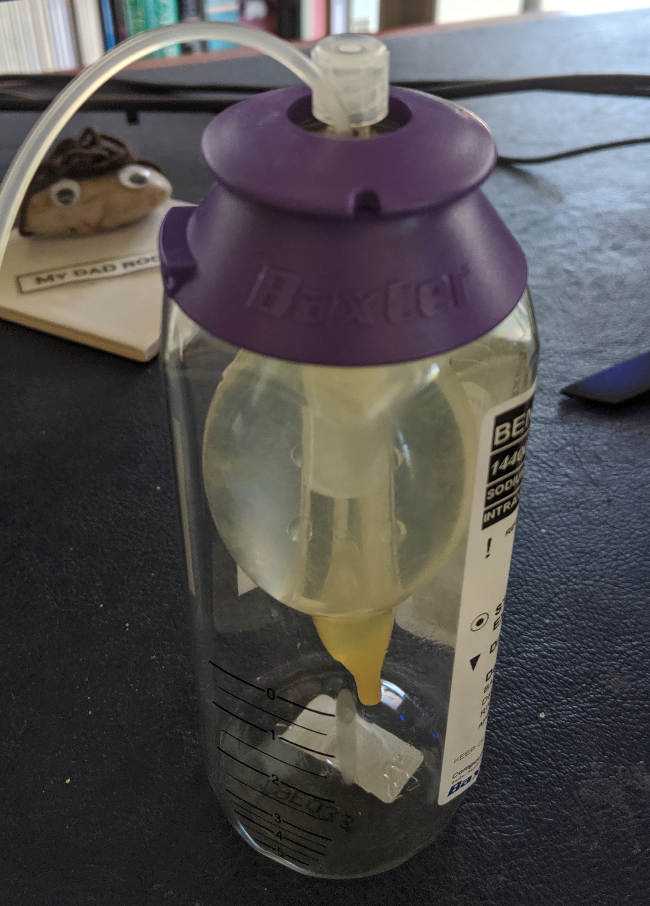
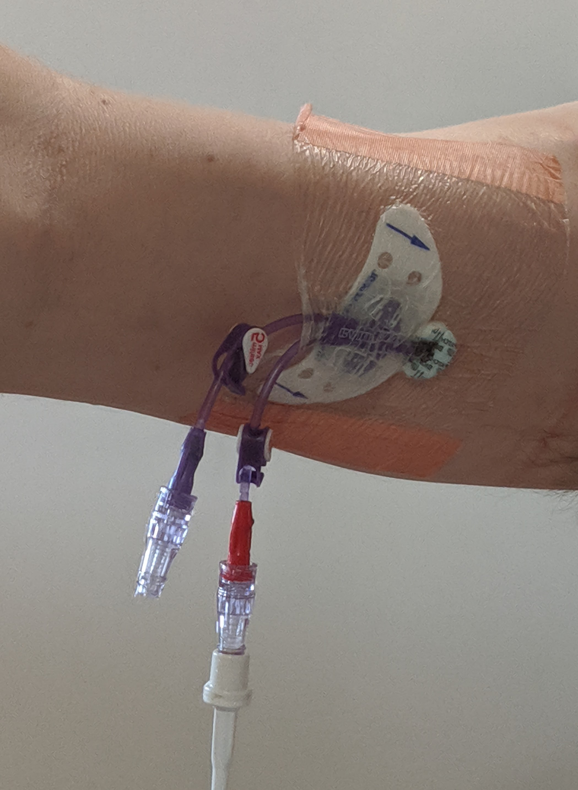
The idea was for me to use a Baxter pump to continuously feed the drugs into my system over a 24-hour period. The Baxter is a marvellous device which uses a pressurized balloon to infuse whatever through the PICC into your blood stream. This would mean a few things for me:
- I would no longer be tied to an IV Pole – NO MORE BEEPING EVERY 4 FUCKING HOURS.
- I could have a shower without tangling myself up in tubes
- FREEDOM – I didn't need to drag around the IV Pole any more, I could roll over in bed without something tangling up or beeping.
- It's silent.
Whoever came up with this thing deserve a medal.
PS. 6 week update – PICCs & Baxter pumps suck. I'm sick of having things attached to me and getting tangled up on stuff. It's uncomfortable and itches and is generally annoying. Though it still doesn't beep at me.
And this dear reader is where things get really interesting.
The PICC Insertion
To insert a PICC line you need a radiologist because they guide the tube into the right veins into the heart. So, after a local anaesthetic in my arm they started stuffing the appropriate tubing into my veins, and the surgeon says
“That's interesting, we haven't had one of those for a while”
In certain circumstance this is not the sort of thing you want to hear. I can assure you that one of those circumstances is when a radiologist is trying to insert things into your heart.
After a lot of fiddling around the team of people started pulling the PICC in and out of my arm and cutting bits off of it (It started out at 51cm? and ended up about 46cm from memory). There was also a lot of flashing of the lights, which I assume were to take a number of x-rays, but I don't really know.
Eventually it was all over and I was shuffled back to my room with a shiny new dual lumen PICC dangling out of my arm. I was provided with the added caution to not get it wet, it's “sort of water proof, but the lumens coming out of the bottom of the bandage can let water in”.
Then the cardiologist showed up and starting talking about my heart and asking questions like “Did you know you had a heart defect?”.
And this is where we start delving way back into the past.
1975
It all began way back in the days of yore when mankind was young and foolish, and the internet wasn't yet invented. When I was a wee lad, I had desires of being a mutant supervillain but I couldn't even get that right.
Instead of getting super powers, I instead grew myself a bunch of congenital heart defects, only two of which are actually important.
- Atrial Septal Defect
- Two Superior Vena Cavas
For those of you in the audience who aren't up-to-date with general human anatomy (shame on you) here is a recap.
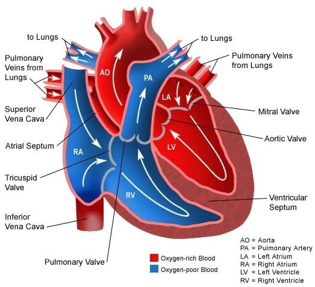
Blood from the body enters into the right atrium, it gets pushed into the right ventricle and from there to the lungs where it gets filtered and re-oxygenated. From the lungs, it comes back to the heart by the pulmonary veins, into the left atrium. After which it's pushed into the left ventricle and pump to the rest of the body via the Aorta.
Enough about boring people hearts.
Dual Superior Vena Cava
One way in which I'm special is that I have not one, but two Superior Vena Cavas. If you look at the earlier image of the veins/arteries of the body you can see that above the heart all the veins (blue) that come out of the head and arms join up just before they enter the heart.
The bit where everything has joined together is the Superior Vena Cava. Instead of this, my body has 2 of them. The veins from the right side of head and right arm are normal and join up and enter the heart where normal people's veins do. Meanwhile the veins from the right side go their own way and enter the right atrium somewhere else. The pictures below kinda show what is going on.
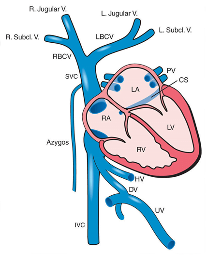
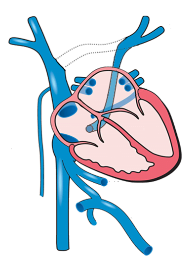
Atrial Septal Defect
Normally, when the heart forms there is a wall between the two atriums. In some cases, there may be a hole in this wall, but it normally closes and there are no issues. My failed attempt at mutant superpowers however screwed this up, and the hole was large, and didn't go away on its own.
I'm not sure exactly how badly my heart had screwed this up, but it was pretty bad.
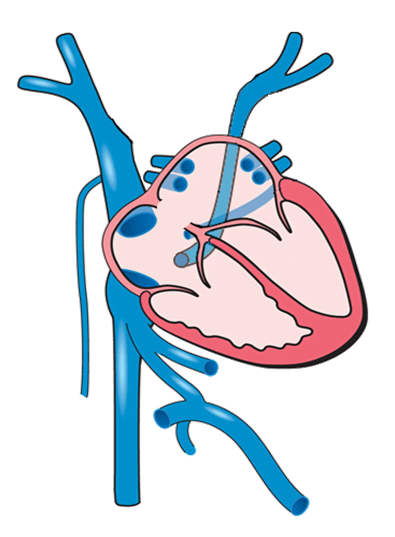
This, as you can imagine, causes all sorts of problems. The mixing of blood from both atriums means that there is a large percentage of deoxygenated, unfiltered blood being recirculated throughout the body. The problem with this is that the body kinda needs oxygen to survive and it wasn't getting it.
Being in the late 70's, things like heart surgery on young children, while not brand new, were still fairly uncommon. The doctors at the time decided to wait things out until I was 10 before cutting me open and playing around with various non-vital organs like my heart. I assume this decision was mainly because a 10-year-old is a lot larger than an infant, and thus easier to do things with their insides.
However, things (as typical) got worse. In order to compensate for the lack of oxygen being delivered to the extremities my heart was growing larger and stronger (MOAR POWER!!!) to push more bad blood around. While a valiant effort, it wasn't enough. Symptoms of this included things like blue lips, a deformed ribcage (the heart was growing large enough that the ribs were pushed out of the way to make room for the larger heart – easy to do in a small child because they're pretty flexible then).
When I was 3, the surgeons decided I couldn't wait another 7 years and it was time to intervene. So, they put me under, cut me open and poked around with my insides. After surgery things improved greatly and I went on with life as normal.
Unfortunately, unknown to anyone, the surgeons mildly screwed things up. Twice.
And who can blame them really. A three-year-old is pretty damn small, and their heart is way, way smaller. Technology in the 70's didn't include things like microsurgery and all the fancy things we have now, so they did the best they could by sticking their big adult-sized hands in a comparatively small vital organ of a toddler.
The patch that was put in place separated the two atriums, so (supposedly) the blood wasn't mixing and causing oxygenated and deoxygenated blood to recirculate. Things were looking up.
Unfortunately, the patch they put in place to separate the atriums and stop the blood from going the wrong way was only “mildly” in the wrong place. Instead of directing the blood from the right superior vena cava into the right atrium, the patch directed it to the left atrium. Meaning a quarter of the blood in my body has been going into the wrong atrium... for the last 41 years. Whoops.
So now rather than all the blood being mixed up and pushed around incorrectly, 75% of it was good, but the other 25% was all bad… almost. It turns out that the patch has a hole in it. Whether this was there from the start or formed over time is not known. But due to differences in pressure on either side of the atrial wall it meant that some of the blood from the right SVC was being forced into the right atrium where it should have been anyway.
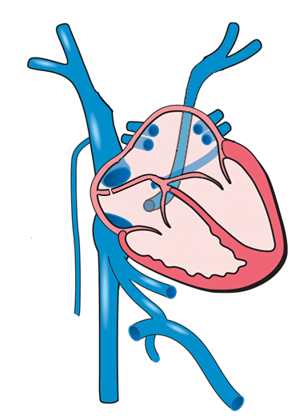
So now we've covered how screwed up my heart is, we are come back to that day in early September. For the last 40 odd years I've been running around with dodgy plumbing where 25% of the blood in my body is circulating without being filtered, or oxygenated, by the lungs. (Just think of how awesomely fit I would have been if things were operating as intended.) I can now blame the surgery I had when I was 3 for how I didn't hit my marathon target time, and not just being unprepared and lazy.
How does all of this relate back to getting brain parasites?
The Infectious Disease specialist was very curious as to how I managed to get some rather bland and common bacterial infection inside my brain. That kind of thing is almost impossible… unless you have a heart that doesn't work quite right and you're pumping blood back into your circulatory system without it being filtered by the lungs first.
The current theory is: a week or two before the first seizure, I had a minor infection in my teeth or sinuses (or perhaps I picked my nose too much). This is normal and typically would not be even noticed. BUT... the infection got dislodged somehow and went through my heart the wrong way and ended up in my skull.
While there, it took up residence in a nice comfy new home and grew to the 3.1cm lesion that eventually screwed around with something important. Took out its spice weasel and bam – grand mal seizure.
The interesting thing about all this is that this could have happened at any time in past 40 odd years. It was just pure chance that it happened at all. If I hadn't irritated some minor god somehow, my brain would still be in its usual state and life would have gone on as normal.
Or, it could be considered a good thing that it happened when it did. Two days after the first seizure I was supposed to start a new job. This job would have had me travelling regularly to Zambia. One of the bigger cities of Zambia, but not somewhere with hospitals staffed with highly trained doctors, nurses and assorted specialists in infectious diseases and neurosurgery. I'm told that if the operation hadn't happened within 48 hours of things getting worse the way they did, I would most likely have died. If the seizure had occurred a month or so later, I would have been 40 hours of travel away from home, stuck in northern Zambia. So, maybe it was a good thing it did happen when it did.
Sucks about the job though, it did look like it would have been interesting and the pay was rather nice.
Anyway, back to our story.
26th September
Everything was looking good. My seizures had reduced considerably. I had started to recognize the symptoms of when one was coming on and, in some cases, control them, either by conscious thought and willing my hand to be still, or by stopping everything I was doing and lying down (often resulting in a nap).
Bec: Or it was just that not all the seizures progressed and you had nothing to do with that. But, hey... whatever. ?
27th September
After the cardiologist visited, I was scheduled for another echocardiogram to see what they could see in my heart. The tech who was running the scan was only mildly interested until she heard about the dual SVCs and the atrial septal defect. At which point things started to hurt. She was jabbing the probe into my chest/abdomen with wild abandon trying to see if she could see where things were going wrong in real time. It was exciting enough that she called in a colleague to help with the jabbing.
28th September
After the results of the echocardiogram, the cardiologist requested to meet with my parents because they were there back in the 70s and might have been able to provide some more info. Apparently, my memories as a three-year-old weren't satisfactory. Go figure.
It was urgent enough that the cardiologist had said “I have a full day of surgeries booked, but get to nurses to page me when your parents are here and I'll come up”.
So, come he did, in full surgical attire down to the cloth booties and cap. He rattled off a few questions, and whatever answers Mum had provided were enough to confirm his suspicions.
He then described everything about what was wrong with my heart and the repair that I wrote about earlier. The next sentence he said will stick with me forever.
“This can all be fixed, but it's above my pay grade.”
This is from a fully qualified cardiologist who has been practicing for over 20 years, suited up in surgical scrubs, heading straight out of one operation before heading to another. He had just told me that everything I had been through for the past two weeks was related to a 41-year-old operation. He did this quickly, calmly and in a manner that was easily understood, then turned around and said – I'm not good enough to perform the operation you need to fix you.
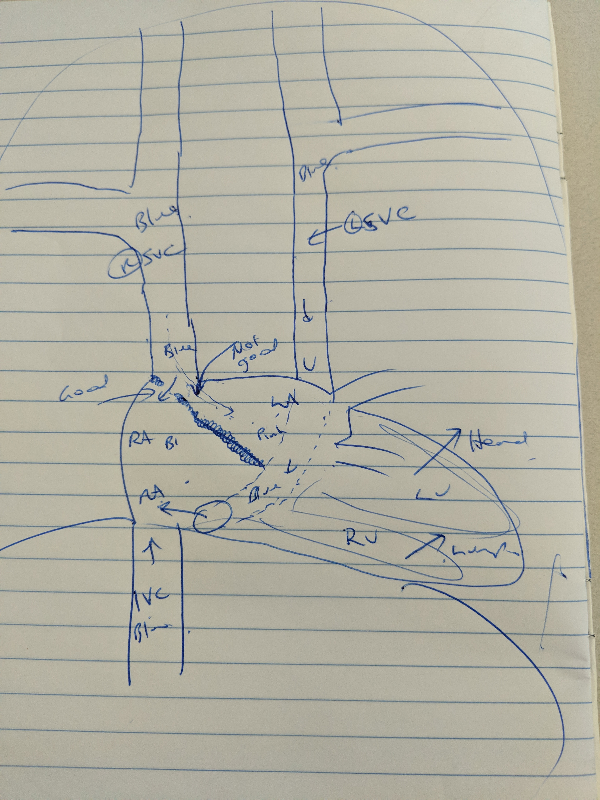
Apparently, there are a group of specialist cardiologist in the world (5 in Australia, 2 in Brisbane) who focus specifically on congenital heart defects in adults and I need to see one of them.
This was then followed up by, “it also cannot be done until after the damage to your brain is fully healed sometime in the next 6 – 12 months”.
You see, when you perform any surgery on the heart you need to use a lot of anticoagulants. The purpose of this is to make sure your blood doesn't clot while they're messing around with your heart. Unfortunately, blood that doesn't clot also likes to spill out of holes where it can (In case you've forgotten I have a not insignificant hole in my brain, and bleeding in your brain is considered a bad thing).
The cardiologist told me that there are a team of specialists who operate out of the Prince Charles Hospital in Brisbane who focus specifically on all these interesting heart problems. So, once my brain has healed, all my details will be passed off to them and they will all sit and around and figure out the best way to fix it properly, either through more open-heart surgery, or by way of an angiogram.
So now my roster of doctors includes:
- Neurosurgeon – to cut open my skull
- Neurologist – to drug to me to the eyeballs (and beyond) to control the seizures while the damage in my brain heals itself
- Infection Disease Specialist – to kill the things that are growing where they're not supposed to
- Cardiologist – to cut up my heart again and put it back together so it's proper like.
Added this are the therapy/rehab specialists:
- Physiotherapy – to ensure I can walk around without tripping on my own feet
- Occupational Therapist – to help me learn to write and type again
- Speech Pathologist – to work on rewiring my brain so I can speak normally, and think deeply complex thoughts.
This does not include the dozens of nurses and orderlies in the hospital who helped look after me while I was in there for over a month.
29th September – 2nd October
Things were looking up. The drugs were keeping the seizures to a minimum. The wound on my head was healing nicely (I now had a cool scar to show off). I'd shaved my head, because neurosurgeons are crap at giving haircuts. My Baxter pump had shown up and I was off the IVs and the beepy machines. All the cannulas had been removed. Most importantly, I had a date I could go home and be free – 2nd October.
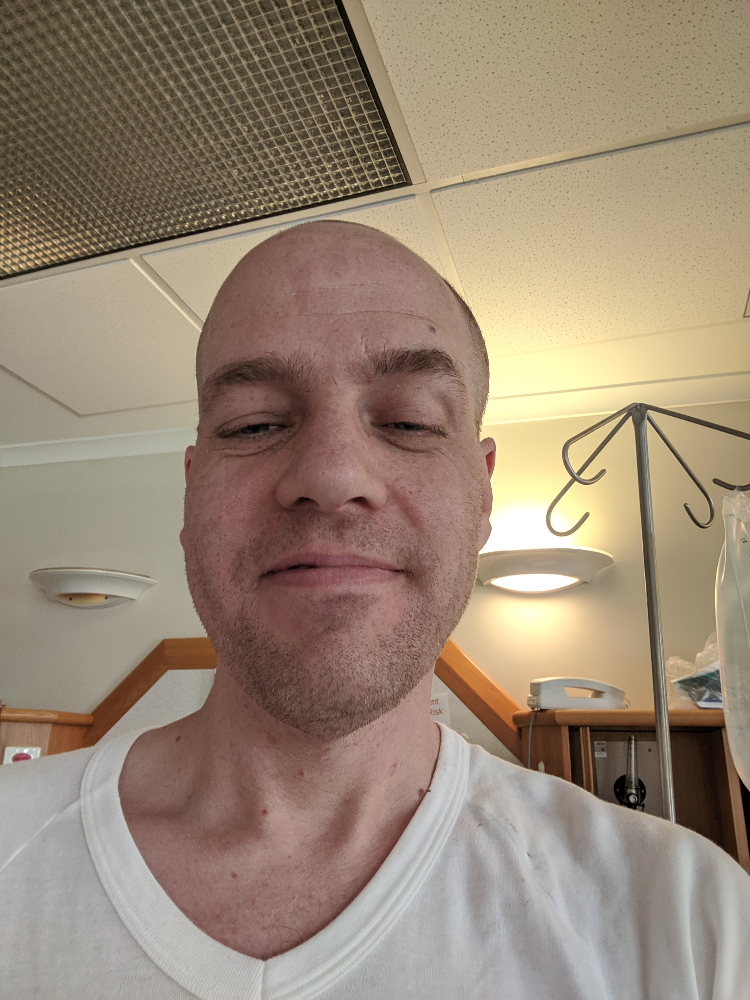
Then, two days before checkout, I developed a fever.
Apparently being in a hospital for so long, it's not uncommon to get sick (if somewhat ironic). Somehow, I contracted Rotavirus (I'm positive I was washing my hands regularly, so someone else gave it to me) – Rotavirus is not fun and I don't recommend getting it.
One of side-effects is that nurses then had to follow “contact precautions” which basically say that every time they come in to do something to me, they have put on a facemask, disposable apron and gloves to make sure they don't get infected and spread it around the hospital. Hospitals are definitely not focused on the zero-waste ideology.
I was too sick to eat, and not drinking enough, so in went yet another cannula for IV fluids and my release date was cancelled.
Bec: Don't forget, during this time you also had another seizure. It was different from the rest and much more painful. Still a focal seizure though, which meant they upped your medication. The new meds made you practically comatose. I was told your lungs were starting to fill with liquid and you had to be upright for at least half an hour at a time several times a day. I couldn't get you to sit up for more than five minutes at a time, and when you did sit up you slumped forwards with your head on the table. I was terrified you'd get a chest infection and end up in the hospital even longer. Every time a doctor came to visit they would ask if you were eating okay. I would remind them you hadn't eaten for a day, two days, three days. They would seem surprised – EVERY TIME. The Neurologist at the time kept telling me that yes the new drugs would make you ‘a little sleepy'. I quietly objected to her description and told her you couldn't sit up and you were going to get a chest infection. It was all very scary. Then you got better. Yay!
3rd October – 7th October
After getting over being sick I spent the next few days being bored. If you're in the between state of being sick enough to actually need to be in hospital and not well enough to go home, hospitals are really fucking boring.
There is nothing to do. The hospital's internet connection is crap and my phone's data plan is cheap and doesn't let me browse the internet all day – and there isn't really anything of interest on there anyway. Bec: HAH!
Reading was still difficult because concentrating on anything hurt my brain. I kept losing track of what was going on and had to keep re-reading the same paragraph multiple times.
While I had managed to get back the gross motor control of my right hand, the fine motor skills were still eluding me. Someone kept moving the keys on my laptop and I kept pushing the wrong buttons (for example it would take 6 attempts to type “the” and efforts at correcting my mistakes just ended up with an endless repetition of =, ] & \ showing up instead of backspace.)
I spent a lot of time pacing the corridor of my ward to pass the time. Their carpet is really ugly, and most of the art work on the walls is meh. I wasn't allowed to roam the hospital because I was a seizure risk, and I couldn't get out on the balcony without a nurse swiping me out first (they also lost me once when I went out and the nurse who let me out didn't tell anyone else).
Home time was pushed back to the 8th October.
8th October
After an interminable wait I was allowed to go home. Suddenly, I had people rushing all over the place to sort things out for me. I had 3 separate visits from pharmacy (I now have a bucket load of drugs), multiple nurses checking paperwork, home nurses trying to schedule follow-up visits (the Baxter needs changing once a day and I needed to arrange a time for a nurse a visit me at home, which worked around all the other things that also need to be done), and scheduling follow-up therapy visits.
Oddly enough in all of this the hardest thing to organise was to get the doctors to sign on off my release. The neurosurgeon who hadn't been to visit in over a week, and who I had one brief conversation (about his next holiday) while pacing the corridors, was the hardest to get the sign-off from.
Finally, at 2PM I was free.
Rebecca packed up my crap and I shuffled slowly out to the car park.
The 20-minute car ride home was exhausting, so the first thing I did after getting home was to have a nap.
9th October – 13th October
Everything was going well. I had settled into a life of warming the couch while reading, warming the couch while having a nap and generally do sweet FA. I was taking copious amounts of drugs morning and night and sleeping an awful lot.
I was trying to keep up with the therapy exercises I had been given to do, but sleeping and reading seemed more interesting. Also, between 1pm and 3pm I had to be available for the home nurse to rock up and change the daily dose of IV antibiotics in the Baxter.
I tried to do some things around the house, but not very successfully. Emptying the dishwash in the morning required a 2-hour recovery nap.
All in all, it was pretty boring.
After breakfast on Sunday the 13th I was sitting at the kitchen table doing the “homework” that the speech pathologist had given me. One of the issues that my brain parasites had left me with was difficulties in finding words. When you try and form a sentence, your brain runs around all the words you know and pulls out the correct ones that fit what you are trying to say. My issue relates to how the brain does this finding of words. To this day it's still one the hardest things I have in my “homework”, and by “hard” I mean my heart rate goes way up, I start to shake (generally my right arm) like I've had a shot of adrenaline (or three/four shots of espresso) and my brain begins to ache.
This particular bit of homework consisted of naming as many things as possible that exist in a category. For example, in one-minute name as many breeds of dog as you can, or words starting with R.
This particular Sunday I spent about 5 minutes on this homework before I'd had enough. The shaking had started pretty quickly and my head hurt, so I stopped and went and lay on the couch for another nap.
Awhile later I was still shaking when Rebecca noticed me. The shaking had spread to my right leg and I well into a full-on focal seizure. Who do you call at 8:45 on a Sunday morning when you need advice? The doctors weren't answering their phones and local the GP was closed. So, Rebecca called the ambulance again (once again I can attest to the hiring policy of the Queensland ambulance service).
After they arrived, they were figuring out what to do. Apparently, their policy states they're not allowed to give someone midazolam when they're conscious, so they had to get approval from their superiors. By the time this came through I had been having a focal seizure affecting my right arm and leg for about 50 minutes.
By the way, to the student paramedic who put the cannula in, it hurt when you put it in, and it was a really shitty spot so I couldn't bend my wrist without it hurting every time.
I was bundled into the ambulance again and off we went to the Wesley emergency department. 8 hours of boredom later I was readmitted to my old ward and go to say Hi to all my old nurses who thought they'd gotten rid of me.
Thankfully, this time I was only in overnight before being sent home again.
14th October - now
Since being sent home (for the second time) nothing drastic has happened. I still sleep a lot. The number of different drugs I'm on, to control the seizures, has been pretty constant, though the amount of one of them has been increased twice.
I've been to therapy twice now; the first time was to get baseline measurements. The second time was to start doing things.
My physios have been stymied by the cardiologist, who put a blanket ban on me doing anything that gets my heart rate up (though I'm trying to get clarification on what I can/cannot actually do). So, we're working on my balance and general posture – doing squats on a Bosu Ball is really hard.
The OT has given me the hardest lot of theraputty to play with to strengthen my hands and fingers. Typing has been improving by actually doing things (Ie. this wordy lot of random garbage you're reading now). I haven't really worked on my handwriting though. It's about as legible as it used to be, and who writes these days anyway? Though I really should do more just to improve endurance.
My speech pathologist nearly killed me at the second session. We were working on the finding words thing I described earlier and it was ok for a bit. Then she decided to make it harder by taking me for a walk. Apparently walking and talking and thinking of ways to describe the height and weight of a coin (in detail) was too much for my tiny brain and I started in on the ‘almost a seizure but not quite' thing again. Which meant my hour long session was cut very short.
I still use the wrong words all the time while trying to write things down, and while my spelling is improving it's not great. Spell check has been very helpful when writing this thing. Bec: I've been a little bit helpful, too. ?
I have had the PICC removed from my arm, and substituted it with a massive load of oral antibiotics.
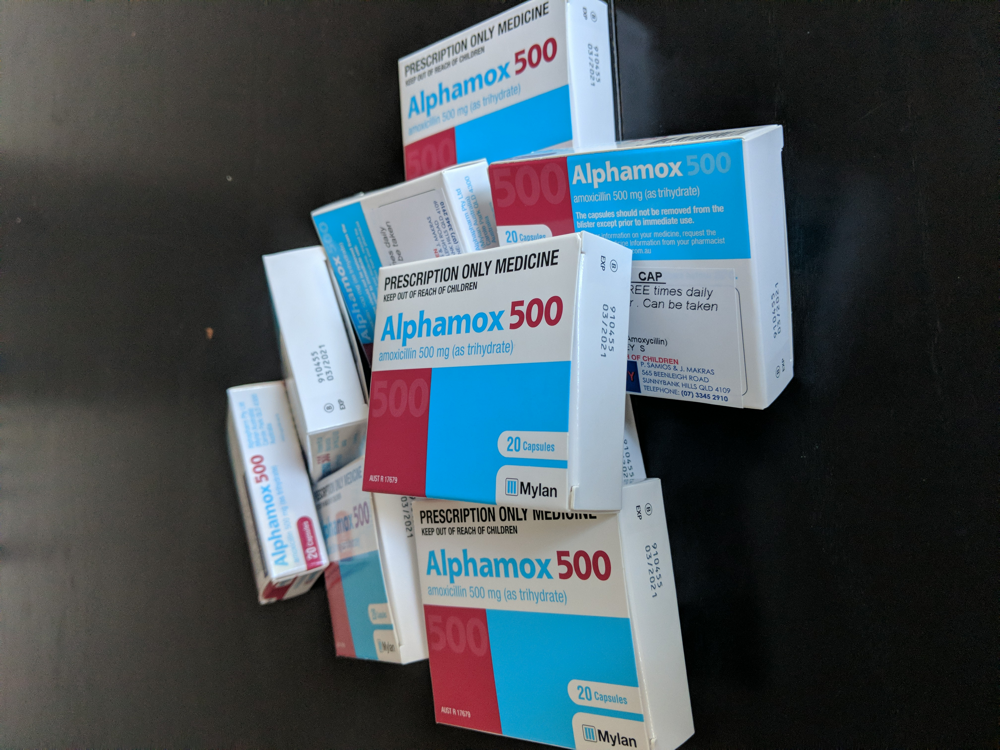
My daily drug dosage is somewhat insane
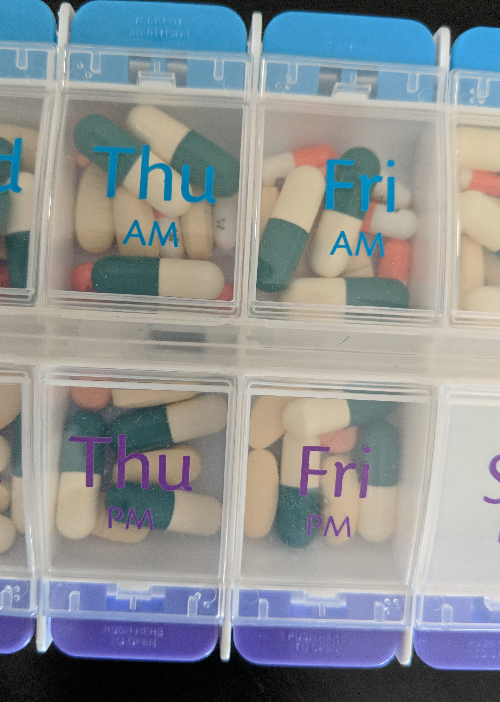
- 430mg Dilantin (Morning)
- 1500mg Amoxicillin (Morning / Night)
- 0.5mg Clonazepam (Morning / Night)
- 1500mg Keppra (Morning / Night)
Apart from the Amoxicillin, every one of these is some kind of suppressant to control the seizures while my brain heals. Which is why I sleep a lot and have trouble thinking.
I'm going to therapy sessions one a week to visit the OT, Physio & Speech people. Things are slowly improving, but still not great. Speech therapy is still the hardest of them all as there isn't really anything wrong my body. It's actually having to use my brain and think things that hurts the most.
I wake up in the morning with the shakes until after I take my morning drug dosage. I sleep a lot (I have a nice spot on the couch that I have claimed as my own).
There is still a droop on the right side of my face which gives me a lopsided smile, but it is slowly improving.
Basically, life goes on.
Post
Thanks to all of you who have provide support through this ordeal. It is really appreciated.
Friends who have provided companionship and support.
Family who have been there when needed, looking after the spawn, helping out with general stuff, providing food, etc.
The kids have been good and have helped when/where they can. I don't believe they know the magnitude of how serious things were at the beginning though.
Rebecca has been marvellous dealing with everything, and I greatly appreciate all the work and effort she has put in. Rebecca has been by my side the entire time and supported me through everything. While she has tried to hide how hard it has been on her, I've hung around long enough to tell it's been wearing. Hopefully I'll be able to repay her somehow soon.